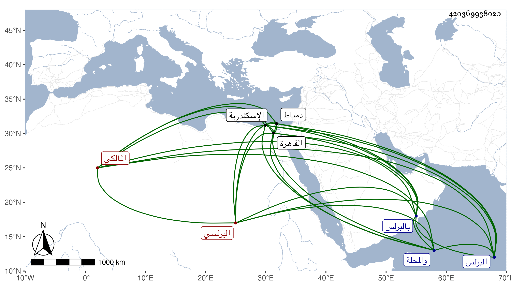

0902Sakhawi.DawLamic.ITO20230111-ara1.EIS1600.420369938020
Biography ID: 420369938020
695
أحمد بن يوسف بن علي بن محمد بن عمر بن عثمان بن إسماعيل الشهاب البرلسي المالكي ويعرف كجده بابن الأقيطع . ولد سنة تسع عشرة وثمانمائة بالبرلس ونشأ بها فقرأ على الفقيه علي المنطرح وكان صالحا ثم على الفقيه علي بن محمد بن علي الحسيني وحفظ ابن الحاجب الفرعي وأكثر مختصر الشيخ خليل وبعض ابن الحاجب الأصلي وألفية ابن مالك بكمالها وكذا الشذور نظم التلخيص في المعاني والبيان للشيخ خلف وأخذه مع أصله وشرح الشاور للحنفي عن ناظمه وأخذ الفقه عن محمد الرياحي المغربي تلميذ ابن مرزوق ونزيل البرلس ثم بعد وفاته قدم القاهرة وذلك في أواخر أيام البساطي فأخذ عن الزينين عبادة وطاهر وحج بعد الستين ثم بعد ذلك ودخل دمياط والاسكندرية والمحلة وتصدى في بلده وغيرها كالقاهرة والمحلة للإقراء فانتفع به الطلبة وتخرج به فضلاء مع ملازمته للتكسب بالنسج بالجيم على طريقة جميلة وأخذ عني البعض من البخاري وغيره بل حضر عندي في مجالس الإملاء وسمع دروسا في الاصطلاح والتمس مني الإجازة فأجبته وأخبرني أنه جمع كتابا في الوعظ سماه نزهة النظار في المواعظ والأذكار في مجلدين وأنه شرح مقدمة في العقائد للشيخ عبد العزيز الديريني والجرومية وقواعد القاضي عياض لكنه لم يكمل وعمل منظومة في الفرائض أولها :
| الحمد لله العلي ذي الكرم | حمدا يوافي مالنا من النعم |
وشرحها ، وكذا تردد للبقاعي وأخذ عنه ونعم الرجل علما وصلاحا وتواضعا وتقشفا وتقنعا ممن اجتمع له الحفظ والذكاء .
